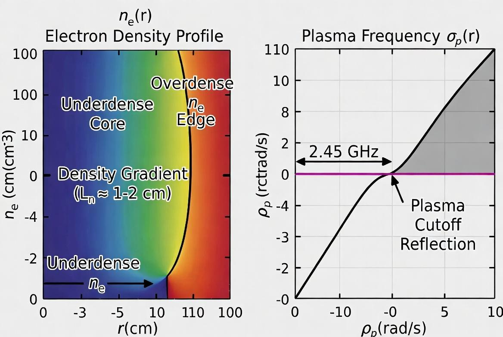
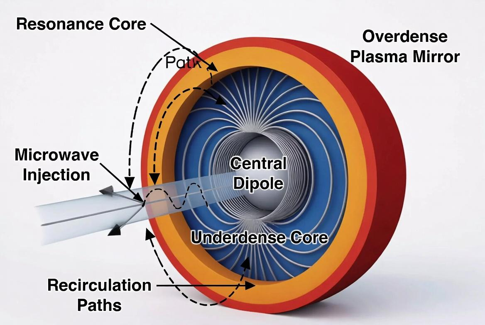
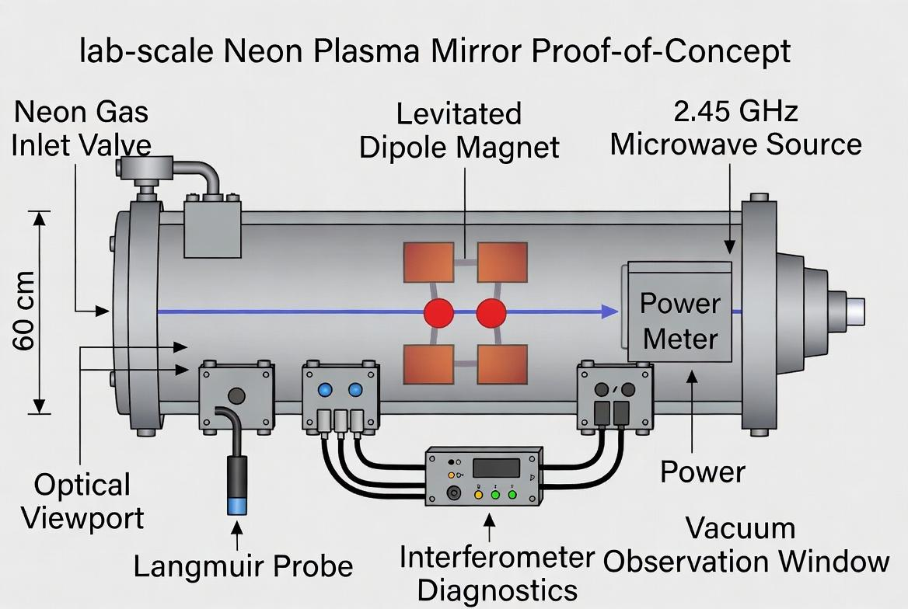
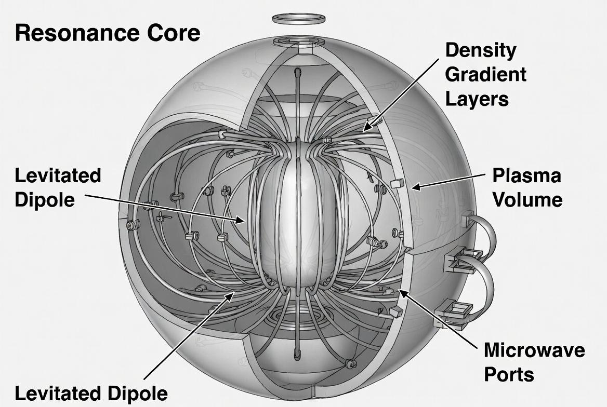
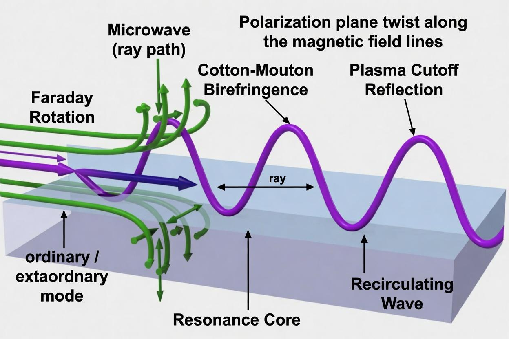

Microwave Recycling System Using Gradient Density Plasma and Magneto Optics
These experiments involve high-voltage systems, microwave radiation, vacuum systems, and plasma generation. They must only be performed by qualified personnel in a properly equipped laboratory environment with appropriate safety measures, shielding, and regulatory compliance.
Detailed safety protocols and risk assessments are available upon request to qualified research institutions.
The Resonance Core explores a plasma-based approach to microwave heating in fusion-relevant conditions. It uses a levitated dipole magnetic bottle configuration with controlled radial density gradients — an underdense central region surrounded by overdense edge layers — to form an internal “plasma mirror.” This boundary is intended to reflect and recirculate injected microwaves through the plasma volume using plasma-frequency cutoff reflection, Faraday rotation, and Cotton-Mouton birefringence.
This dynamic plasma boundary is designed to reduce losses compared to physical walls or antennas, potentially allowing improved recirculation.
The immediate priority is a modest Neon Plasma Mirror Proof-of-Concept device (30–90 cm scale). This low-risk test uses stable neon plasmas at 2.45 GHz to examine microwave recirculation physics without fusion fuels or extreme conditions. Key metrics include measurable Q-factor improvement over an empty cavity, repeatable density gradient formation (L_n ≈ 1–2 cm), and reflection performance.
Positive results would provide data on the core concept and support further development toward a fusion-conditions prototype.
This concept is intended to explore a potential contribution to plasma heating methods, with possible relevance to fusion research, industrial plasmas, and related applications. Full details, experimental plans, and notes follow.
Resonance Core: Microwave Recycling System Using Plasma Density-Gradient Magnetic Bottles
This invention relates to plasma physics and magnetic confinement techniques, with possible applications in fusion research, energy systems, propulsion concepts, and industrial plasma processes.
Magnetic confinement fusion systems require substantial auxiliary heating power to reach and sustain fusion conditions. Conventional microwave heating methods suffer from limited efficiency due to single-pass absorption or losses at material walls. Physical mirrors and resonant cavities add complexity, suffer from erosion and neutron damage, and increase system cost. A high-efficiency microwave recycling system that multiplies the effect of externally launched power without relying on solid mirrors or cavity walls is needed.
The present project, referred to as the Resonance Core, provides a microwave recycling system within a magnetic bottle configuration. Engineered electron density gradients — an underdense core surrounded by overdense edge layers — enable the plasma itself to act as both a propagating medium and a high-efficiency reflector without physical mirrors or walls.
Microwaves in the 2.45–10 GHz range are supplied externally. After initial ignition by an external microwave pulse, the externally launched microwaves undergo Faraday rotation and Cotton-Mouton birefringence during propagation through the underdense core and are reflected at the plasma-frequency cutoff in the overdense edge layers. This recirculation enables multiple passes of the microwave energy within the magnetic bottle, with Q-factors to be quantified experimentally, and serves as an efficiency multiplier for auxiliary heating, thrust vectoring, or beamed power applications.
A laboratory-scale embodiment (30–90 cm magnetic bottle) is feasible today to demonstrate the recycling mechanism, measure reflectivity and polarization effects, and quantify the achieved Q-factor. The laboratory demonstration is too small to sustain fusion conditions; it serves solely as a proof-of-concept. The same principles are directly scalable to larger magnetic bottle embodiments for enhanced performance in fusion systems.
The Resonance Core operates by simultaneously harnessing three established plasma-physics effects inside a magnetic bottle:


The microwaves are launched externally (e.g., from gyrotrons or magnetrons). In the chosen microwave band, the core plasma remains underdense and transparent, while the edge layers are overdense. Density gradients are created and controlled using helicon or ECR sources (target densities 10¹⁶–10¹⁹ m⁻³). The full Appleton-Hartree dispersion relation governs propagation, but the O-mode cutoff at ωp provides a reliable working approximation, routinely yielding high reflectivity as demonstrated in tokamak reflectometry and laboratory plasma mirror experiments.
The system allows repeated recirculation of the externally launched microwave energy inside the magnetic bottle. This yields a resonant system that multiplies input power without material interfaces inside the plasma volume. Preferred fuel for fusion applications is D-He³ (aneutronic), though the recycling mechanism applies to any magnetically confined plasma.
A small-scale laboratory demonstration is feasible today with a 30–90 cm spherical magnetic bottle (levitated-dipole configuration, B = 0.1–2 T), standard helicon or ECR sources for density control (including edge-localized helicon antennas to engineer and maintain the required hollow density profile against natural central peaking), and off-the-shelf 2.45 or 10 GHz equipment with polarimetry and reflectometry diagnostics. Density can be swept across cutoff while measuring combined reflectivity, Faraday rotation, and Cotton-Mouton shifts to quantify the achieved Q-factor and validate the recycling mechanism. This demonstration proves the core concept but is too small to sustain fusion conditions.
The invention is fully enableable by a person of ordinary skill in plasma physics and microwave engineering. All components (magnetic bottles, density control via helicon/ECR, microwave sources, and diagnostics) are commercially available or routinely implemented in existing fusion research facilities. Gradient profiles and ray-tracing details sufficient for construction are known in the art or can be readily developed.
The present concept provides a microwave recycling system for achieving and sustaining fusion-relevant plasma conditions with substantially reduced input energy requirements. The system comprises a containment vessel defining a reaction volume, a central magnetic dipole, and a magnetized gas configured to form a plasma having a controlled density gradient within the reaction volume. Microwave energy introduced into the reaction volume is efficiently reflected and recirculated by the plasma density gradient and magnetic field, creating a reflective plasma boundary that confines and recycles the microwave energy within the central region.
The architecture enables high-efficiency energy recirculation while maintaining plasma stability, offering a scalable approach suitable for laboratory validation as well as larger embodiments. Methods of operating the system and various alternative configurations are also disclosed.
The Neon Plasma Mirror Proof-of-Concept is a laboratory-scale experiment intended to test whether microwave energy can be reflected and recycled using a controlled plasma density gradient inside a magnetic bottle. The basic concept relies on creating a radial density profile consisting of an underdense core surrounded by an overdense edge layer. In this configuration, microwaves launched into the underdense region can propagate while experiencing Faraday rotation and Cotton-Mouton birefringence, and reflect at the overdense edge through plasma-frequency cutoff. The objective is to demonstrate that this plasma mirror effect can retain microwave energy within the system over multiple passes.
A primary technical challenge is establishing and maintaining the required hollow density profile. Cross-field transport in magnetized plasmas tends to drive central density peaking, which would reduce the effectiveness of the plasma mirror. To address this, the experiment will use a combined approach to actively control the radial density gradient. Edge-localized helicon antennas will serve as the primary method for generating high-density plasma near the chamber boundary. Magnetic induction through auxiliary shell coils will provide supporting assistance for edge plasma formation and field shaping. Biased electrodes or limiters positioned near the edge may be employed to generate localized flow shear, which can help suppress turbulence and improve edge transport properties. Periodic impurity seeding using nitrogen or neon via short, timed gas puffs will be introduced as a refinement tool to increase collisionality and help sharpen the density gradient in the transition region.
The Neon PoC has several primary objectives: to form a stable plasma with a measurable radial density gradient, to demonstrate a significant reduction in reflected microwave power once the overdense edge engages as a reflecting layer, and to show that the combination of edge sources and gradient control techniques can counteract central peaking to a useful degree. While high-efficiency, multi-pass microwave recirculation is not expected at this small scale, a clear demonstration of reduced reflected power together with active density profile control would constitute a meaningful validation of the core physics principles and provide a foundation for further development at larger scales.
Success at the laboratory level would indicate that engineered plasma density gradients can be used to influence microwave propagation and reflection in a magnetic bottle, opening a path toward more efficient microwave energy management in future systems.
The central physics principle of the Resonance Core is the use of a controlled radial plasma density gradient to enable efficient reflection and recirculation of microwave energy without physical mirrors or walls.
In the proposed configuration, an underdense core (where the plasma frequency is below the microwave frequency) is surrounded by an overdense edge layer (where the plasma frequency exceeds the microwave frequency). Microwaves launched into the underdense core can propagate through the magnetized plasma, undergoing Faraday rotation (due to the parallel magnetic field component) and Cotton-Mouton birefringence (due to the perpendicular magnetic field component) as they travel. These polarization and phase effects occur naturally during propagation through the magnetized underdense region.
At the overdense edge, the microwaves encounter a plasma-frequency cutoff and are reflected, acting as a plasma mirror. This reflection returns the wave energy back into the underdense core, where it can propagate again, potentially undergoing additional passes through the system. The goal is to achieve multiple internal reflections, thereby recycling microwave energy within the magnetic bottle and increasing the effective interaction time and energy density inside the device.
At laboratory scale, the primary objectives are to demonstrate:
While true high-Q recirculation and precise measurement of multiple-pass energy retention are challenging at small scale, even a clear demonstration of reduced reflected power combined with a controlled density gradient would constitute a meaningful proof-of-concept for the underlying plasma-mirror recycling principle.
This section provides a complete, practical protocol so that any competent plasma physics or microwave engineering laboratory can replicate the core plasma-mirror microwave recirculation effect. The goal is to demonstrate efficient microwave energy reflection and recirculation using a controlled radial plasma density gradient in a magnetic bottle configuration. A key objective is to establish and maintain a hollow density profile (lower density in the core, higher density at the edge) against natural cross-field transport.

Note: This protocol provides a solid, actionable starting point. Exact parameters will require experimental optimization based on your laboratory equipment. The combination of edge-localized plasma creation, helicon reinforcement, and controlled nitrogen seeding should enable demonstration of the basic plasma-mirror recirculation effect with standard plasma-lab equipment.

Assemble shell with 8–12 shell loops in the cryostat. Mount central dipole coil on temporary mechanical support. Evacuate to <10⁻⁶ Torr. Cool coils to operating temperature. Ramp shell loops to levitate the central dipole. Introduce low-pressure working gas. Launch microwaves at low power into the underdense core. Tune edge density until the overdense layer reaches plasma-mirror cutoff. Verify the underdense-core to overdense-edge gradient (target L_n ≈ 1–2 cm). Increase RF power and observe polarization sculpting via Faraday rotation and Cotton-Mouton birefringence.
Failure criteria: Central coil contacts shell or jitter >2 mm, no stable overdense edge, measured Q too low, cryogenic failure, etc.

What we do with the microwaves:
We launch standard microwaves (typically 2.45 GHz or 10 GHz) into the underdense plasma core. As the waves travel through the plasma, the magnetic field sculpts their polarization geometry in two controlled ways so they reflect cleanly at the overdense plasma edge (the plasma mirror) instead of transmitting through or being absorbed.
The reflection itself is caused by the well-known plasma cutoff (ω < ω_p), already observed for decades in tokamak reflectometry and laboratory plasma mirror experiments.
The two polarization effects we actively use are:
Together these effects allow us to control and optimize how the wave arrives at the plasma mirror boundary for maximum reflection efficiency.
The Resonance Core uses a levitated-dipole magnetic bottle:
The number, size, and arrangement of the shell loops are not fixed — they are dictated by the diameter of the spherical reactor. As the sphere grows larger, more loops are added and their physical size increases to maintain the required field topology and stability.
As the reactor diameter increases, the magnetic field strength B decreases (following the scaling required by the coil-current relationship). Despite the weaker B, overall confinement performance, recirculation Q-factor, gradient stability, and microwave recycling efficiency all improve significantly.
This improvement is one of the key reasons for the strong scaling behavior observed with increasing system size. Larger volume gives the plasma more room to form smoother, more stable density gradients, while the relative impact of the central dipole and edge regions decreases.
In the small PoC the dipole takes up a large fraction of the available space. This creates several practical limitations and a significantly higher overall “loss budget” (scattering, absorption, gradient distortion, edge instabilities, and reduced Q-factor).
At full scale the dipole becomes volumetrically negligible (0.03 %). Almost the entire interior volume is now available for the underdense-core plasma and the clean overdense-edge plasma mirror. This dramatically lowers every category of loss and enables smoother, more stable density gradients.
This volume-fraction improvement is one of the key geometric reasons the system’s performance improves exponentially (or asymptotically) as size increases toward the 12 km optimum. The same basic architecture works from the 60 cm PoC all the way to the 12 km optimal scale.
The PoC has a noticeably higher loss budget because the dipole is still a large fraction of the machine; the full scale reactors essentially eliminate that penalty.
The Resonance Core concept is designed to be inherently scalable. Many of the challenges observed at laboratory scale are expected to become less severe as the system size increases, while the core physics advantages are expected to strengthen.
While many practical challenges remain, the fundamental physics of microwave recycling via engineered plasma density gradients is expected to improve with increasing system size.
The Resonance Core concept is based on a levitated dipole magnetic configuration. A central superconducting coil (the dipole) is magnetically suspended inside the vacuum chamber, creating a dipole magnetic field that provides the primary confinement and field structure for the plasma.
Surrounding the chamber are auxiliary shell coils (shell loops) that assist in levitation, field shaping, and edge plasma control.
At laboratory scale, the central dipole may be magnetically levitated or mechanically supported. Full magnetic levitation becomes more relevant at larger scales.
The combination of the central dipole and auxiliary shell coils creates a flexible magnetic geometry that can be adjusted to optimize conditions for edge plasma production and radial density gradient control.
The existing fusion research community has achieved remarkable results under extraordinarily difficult conditions. For decades, some of the brightest minds in plasma physics have worked to make fusion viable within the constraints of Earth’s gravity and conventional toroidal geometries. Their perseverance is commendable and deserves genuine respect.
This Resonance Core architecture takes a fundamentally different approach — one that deliberately emulates the natural force balance found inside stars while removing the complicating effects of gravity. It is offered in the spirit of open science, with the hope that researchers who have spent their careers pushing against these limitations will now have a new and more intuitive path forward.
The goal is not to replace existing efforts, but to provide an additional foundation that may allow those same talented minds to achieve even greater breakthroughs. Collaboration, validation, and the shared pursuit of clean, abundant energy are what matter most.
Our team is seeking collaboration with qualified research institutions or laboratories interested in conducting the Neon Plasma Mirror PoC as an initial validation step. Funding, facilities, and technical support for these experiments are being sought.
– Q1 Abundance LLC
q1abundancellc@gmail.com